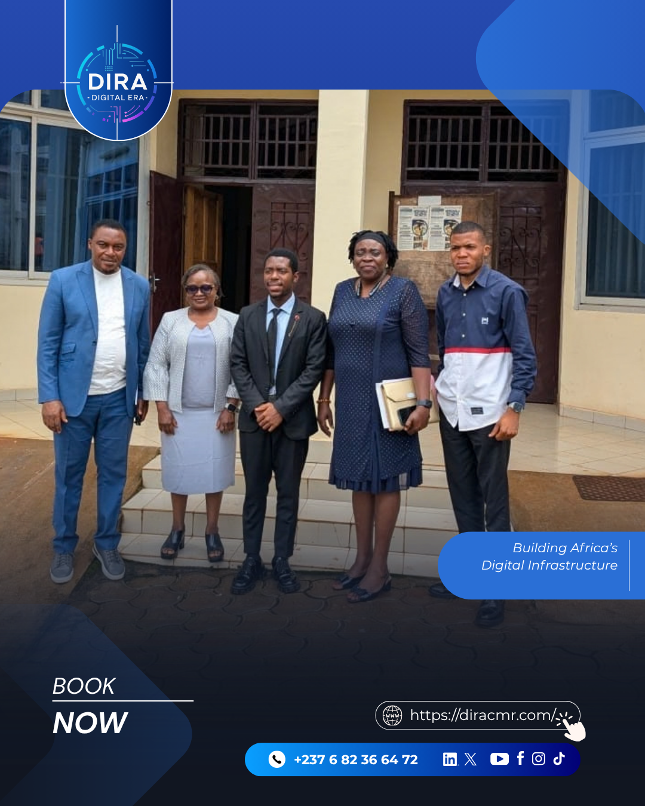

About DIRA
Building Africa’s Digital Infrastructure.
DIRA is a technology company based in Bamenda, Cameroon, established to provide institutions and businesses with software they can rely on. The company was founded on the premise that the region required more than websites and templates; it required systems built to a professional standard and maintained by a team prepared to stand behind its work. DIRA has since grown into a group of ventures spanning housing, philanthropy, events, and media production, unified under a single technology company.
Named Accountability
Every engagement is led by a named, credentialed team member, not a general claim. Sensitive work is handled by people who stay answerable for it.
Government-Tested
DIRA's work has been presented directly to senior government officials and recognized by regional ministry delegates, not just claimed in marketing copy.
Built by Our Team
DIRA develops technical expertise in-house and invests in the people it hires. Several current team members progressed through DIRA's training programs before joining the company.
Our Mission
Why DIRA Exists
DIRA exists to build the digital infrastructure institutions and businesses run on, starting from Cameroon. We design secure systems, custom platforms, and technology services for the organizations that need software they can actually trust, and we extend that same capability to the community around us through DIRA Foundation.
Foundational Pillars
How We Deliver Sustainable Value
Our work is rooted in three non-negotiable operational principles engineered to transform businesses, institutions, and community initiatives.
-
1. Digital Identity & Presence
We build authoritative digital platforms, custom branding, and responsive web portals for small businesses, NGOs, and schools. We transform invisible local efforts into credible, discoverable digital identities that attract partners, donors, and customers.
-
2. Operational Automation
We eliminate repetitive manual workflows, paper logs, messy spreadsheets, and human error. Our custom web tools and internal portals automate staff rosters, member records, payment reconciliations, and customer communication, saving organizations hundreds of operational hours each month.
-
3. Authenticity & Integrity
We engineer secure, tamper-evident systems that uphold accountability and trust. From audit-proof data archives to verifiable credentials, our platforms provide institutions with transparent, verifiable proof of impact and service delivery that stands up to audits and regulatory review.
Numbers That Are Real
Figures from DIRA's verified platform delivery, technical training, and institutional systems.
Our Approach
How We Work
We Build for Institutions
Our primary clients are organizations with serious accountability requirements: associations, government-adjacent bodies, companies managing significant data or transaction volume. We build for the audit, not just for launch day.
We Stay in the Room
DIRA does not hand off deliverables and disappear. Our engagements include follow-through, and the team members who build the system are the same ones who answer for it afterward.
We Train Our Own Pipeline
Several of the engineers on DIRA's team were identified through DIRA's own training programs. That is by design: we develop the technical talent this region produces rather than importing it.
We Are Part of a Broader Group
DIRA is the operating core of a group of ventures that extends the same standard of work into housing, philanthropy, and media production across the region.

Beyond the Core
The DIRA Group
DIRA is the operating core of a small group of ventures, each built to extend the same standard of work into a different part of the community: DHUB, Cameroon's verified housing marketplace; DIRA Foundation, our philanthropic and pro-bono technology arm; and DIRA Content Studio, our media production facility.
Recognition
Recognition & Engagements
The following are factual records of DIRA's institutional engagements. No quotes have been attributed that were not stated.
.PNG)
